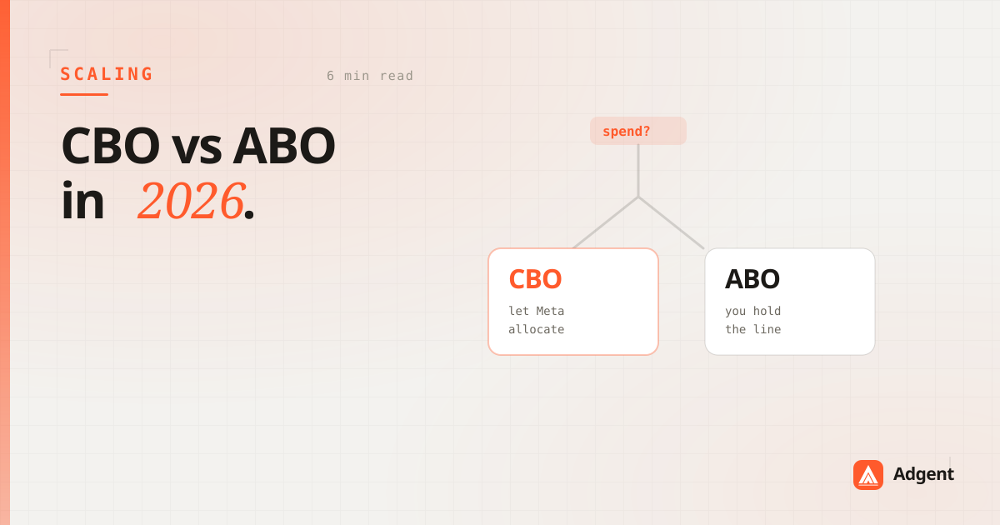

CBO vs ABO in 2026: when each still wins
CBO won the argument years ago and mostly deserved to. But "mostly" is doing real work in that sentence — and the cases where ABO still wins are the cases where you're trying to learn something.

Ask ten media buyers whether to use campaign budget optimization and nine will say yes without asking what you're doing. They're right often enough that the tenth answer never gets heard — which is a shame, because the tenth answer is where the interesting accounts live.
What CBO is actually good at
CBO — now Advantage campaign budget — pools your budget at the campaign level and lets Meta allocate it across ad sets in real time. When it works, it works for a real reason: the algorithm sees auction dynamics at a resolution and frequency no human can match. It's rebalancing continuously while you're asleep.
It needs two conditions to do that well: enough conversion volume for the signal to be trustworthy, and comparable ad sets so the comparison it's making is a fair one. Give it both and it will beat your manual allocation reliably.
CBO optimizes for the campaign's total result. If what you need is an answer about one ad set, it will efficiently deny you that answer.
Where CBO quietly fails you
The failure isn't that CBO underperforms. It's that it does its job so well it destroys your ability to learn anything.
Put five audiences in a CBO and Meta will find the cheapest one in about six hours and starve the other four. You'll see one ad set with 90% of the spend and four with statistical dust. Now answer: were those four audiences bad, or did they just never get a fair trial? You can't know. The system optimized away the experiment you were trying to run.
The same dynamic bites when your ad sets aren't comparable. A €200 cold prospecting set and a €20 retargeting set in the same CBO isn't an allocation decision — it's a rigged comparison. Retargeting will always look cheaper, CBO will always feed it, and you'll wake up to an account that's stopped acquiring anyone new.
The decision tree
Skip the ideology. Ask what you're doing:
- Scaling a known winner, healthy volume, similar audiences? CBO. Let the machine do what it's better at than you.
- Testing audiences, creative angles, or offers? ABO. Buy each one a guaranteed sample. You're paying for an answer, not for efficiency.
- Ad sets with genuinely different jobs — prospecting next to retargeting? ABO, or separate campaigns. Never make the algorithm choose between two things you need both of.
- Under ~50 conversions per week campaign-wide? ABO. There isn't enough signal for CBO to allocate on, so it's guessing with your money.
The structure most good accounts land on
In practice the answer is usually both, separated by purpose. ABO campaigns for testing, where you're buying information and want each option to get a fair shot. CBO campaigns for scaling, where you've stopped asking questions and want efficiency. Winners graduate from the first into the second.
Which means the real skill isn't picking a structure — it's noticing when an ad set has finished being an experiment and become a known quantity. That's a judgment call about statistical maturity, and it's the one Adgent makes each morning: which tests have concluded, which are still running, and which have been starved of the data they needed to conclude at all.
CBO isn't better than ABO. It's better at a different job. Knowing which job you're doing is the whole answer.